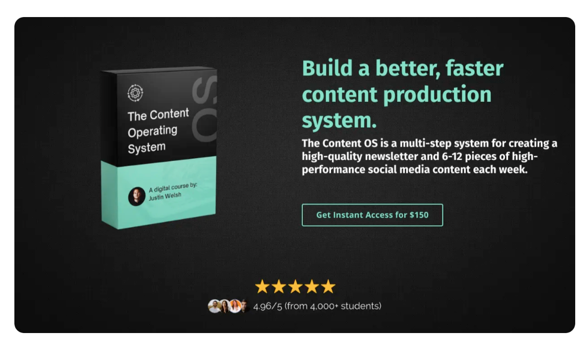
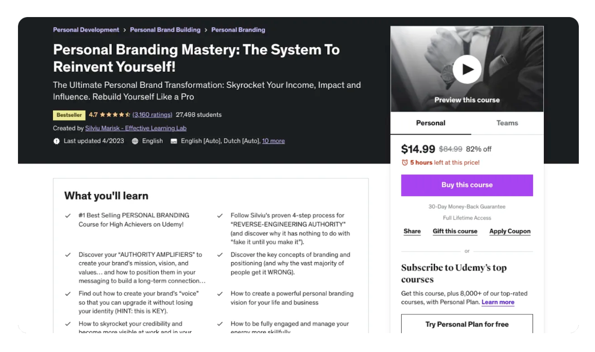
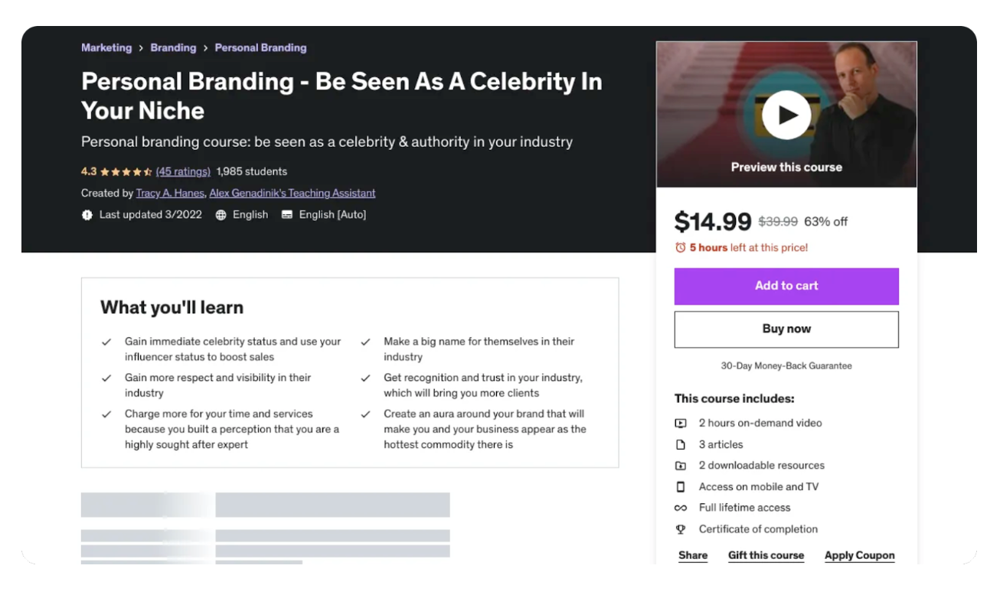

When I walked away from my high-paying executive job in 2019, it wasn’t without a plan.
I’d been spending countless hours raising over $300M in venture capital for cutting-edge startups while seeing content creators making more than me while working 1/10th of the weekly hours.
And I realized what was making it possible — leverage.
The internet represents a market of over 5 billion people, and building an audience gives you more leverage than you could possibly imagine.
I had to build something of my own.
So I set up shop on the platform that (almost) everyone was ignoring: LinkedIn. I started posting day in and day out, and in my first six months, I grew a dedicated audience of over 20,000 people.
Fast forward to today, and I’m making millions each year while working less than ever.
This lifestyle can be yours, too. I can’t promise the journey will be easy, but you can eliminate 90% of the guesswork with the right guidance.
In this article, I’ll run through the guidance you’ll need and where to find it.
I hope it helps.
Best courses for personal branding
Here are the best personal branding courses:
- The Content Operating System
- Personal Branding Mastery
- The 2 Hour Writer
- Part-Time YouTuber Academy
- Start Writing Online in 30 Days
- Personal Branding - Be Seen As A Celebrity In Your Niche
Best overall personal branding course

99% of aspiring creators fail because they lack an effective content production system.
Without one:
- Your content production will be slow
- Your content will lack quality and cohesion
- Your content will be hit-and-miss with your target audience
And as a result, you’ll have no chance of achieving the momentum required to scale your influence effectively.
But with the right systems:
- Ideation becomes easy
- Production becomes streamlined
- Consistency becomes second nature
When you have all the right ingredients, time is the only thing separating you from success
The Content Operating System is a step-by-step, tried and tested method for creating high-performance content, faster.
What you’ll learn
The Content Operating System teaches how to:
- Generate an endless stream of content ideas
- Master the art of writing engaging and valuable content
- Turn one piece of content into several without sacrificing quality
- Effortlessly stand out in an increasingly-competitive creator market
- Distribute content across multiple platforms with little additional effort
Grow on LinkedIn and Twitter
I built The Content Operating System based on my experience growing an audience of over 800k followers on both LinkedIn and Twitter. You’ll learn the exact systems I used and be provided with the tools you’ll need to drive your own results.
No algorithm hacks, underhanded strategies, or tricks, just reliable systems for quality content at scale.
Scale to infinity
No matter how large your audience grows, the strategies taught in The Content Operating System will serve you at any scale.
> Learn more about The Content Operating System
Best practical strategy course for personal branding

Understanding theory is one thing. Putting it into practice, however, is a different ball game.
This is where Personal Branding Mastery by Silviu Marisk comes into play.
Without a strategic roadmap, your branding will be incoherent, your voice will be generic, and your value proposition will be worthless.
But with a proven strategic approach:
- You'll craft a unified personal brand
- You'll carve out your unique niche
- You'll learn to project your value proposition confidently
Personal Branding Mastery bridges the gap between understanding the theoretical aspects of personal branding and implementing them effectively.
What you’ll learn
With Personal Branding Mastery, you’ll:
- Define your unique selling proposition and identify your target audience
- Learn how to create a unique brand identity that resonates with your audience
- Understand how to leverage your personal brand to grow your influence, increase your value, and advance your career
- Gain insights on how to measure the effectiveness of your personal branding efforts and adapt accordingly
- Master the art of selling yourself in an authentic, non-salesy way
Maintain your edge
The principles you'll learn from Personal Branding Mastery aren't temporary fixes. They're strategies that will stay relevant regardless of changes in the digital landscape.
Whether you're starting from scratch or looking to rebrand, this course is a goldmine of practical advice.
> Learn more about Personal Branding Mastery
Best course for high-impact writing to build a personal brand
Personal branding isn't just about learning to promote yourself effectively — it also requires understanding how to write well online. High-impact writing is what captures attention in this noisy digital space.
The 2 Hour Writer is designed to help you create content that resonates, engages, and ultimately builds a brand that's praiseworthy.
Without the right approach:
- Your content will miss the mark
- People won't resonate with you or your message
- You'll find it hard to consistently produce killer content
But with The 2 Hour Writer, you'll:
- Nail that high-impact writing style that turns heads
- Tap into the secrets of grabbing and holding attention
- Craft newsletters, tweets, and posts with newfound confidence
What you’ll learn
In The 2 Hour Writer, you’ll:
- Dive deep into the essentials of writing content that pulls people in
- Transform everyday experiences and insights into compelling content
- Discover Dan Koe's secret sauce — a refined and tested content creation system that's been the backbone of his rapid audience growth
Grow with proven strategies
Dan Koe's The 2 Hour Writer is more than just a course. It's a treasure trove of insights from his own journey. From tweet frameworks that guarantee engagement to newsletter templates that simplify the writing process, you get a behind-the-scenes look at what works in the real world.
> Learn more about The 2 Hour Writer
Best course for building a personal brand on YouTube
Starting a YouTube channel is a fantastic way to build your personal brand quickly. Nothing competes with the richness of quality, informative (and/or entertaining) video content.
Building an audience, creating engaging content, understanding the algorithm, and defining your unique brand on a platform as diverse as YouTube is no simple task.
But with the right guidance and strategies, your YouTube channel can:
- Stand out in a crowded space
- Provide value and engage your audience consistently
- Grow steadily over time, securing your influence and brand
Ali Abdaal's Part-Time YouTuber Academy cohort provides a comprehensive, step-by-step guide to success on YouTube, based on Abdaal's own journey from novice to a YouTube star with millions of subscribers.
What you’ll learn
Part-Time YouTuber Academy will teach you how to:
- Identify your niche and understand your target audience on YouTube
- Craft high-quality, engaging video content that aligns with your brand
- Navigate the YouTube algorithm to maximize your content's reach and impact
- Promote your channel effectively to grow your subscriber base and viewer engagement
- Monetize your YouTube presence, turning your part-time gig into a full-time income
From hobby to business
Ali Abdaal doesn't just teach you how to become a successful YouTuber, he shows you how to turn your passion into a profitable business.
With the Part-Time YouTuber Academy, your journey on YouTube won't just be about branding and building an audience — it'll be about turning your brand into a thriving business.
> Learn more about Part-time YouTuber Academy
Best course for kickstarting your online writing journey
For beginners, getting started with personal branding can be an overwhelming experience. And if the concept of publishing content online is new to you, the paradigm shift can be daunting.
Start Writing Online in 30 Days by Ship 30 for 30 provides an accessible, easy-to-understand introduction to online writing for building a robust personal brand, taking you from a complete novice to a confident brand-builder.
What you’ll learn
Start Writing Online in 30 Days teaches you how to:
- Write 30 "atomic essays" in 30 days
- Turn your brilliant ideas into content that captures attention and drives engagement
- Leverage the power of community, learn from peers, and amplify your content's reach
- Develop a consistent writing habit so you produce content that builds your online brand
- Implement proven templates and frameworks to streamline your writing process and overcome writer's block
Unlock limitless opportunities
Writing online isn't just about putting words on a page. It's about building — building an audience, a business, authority, and a rich library of content that stands the test of time.
Past students of Start Writing Online in 30 Days have embarked on incredible journeys after taking the course. Many have cultivated audiences that hang onto their every word. Some have channeled their newfound skills into launching courses, eBooks, newsletters, and new businesses.
> Learn more about Start Writing Online in 30 Days
Best niche-focused personal branding course

Personal branding doesn't always mean casting a wide net. Sometimes, it's about carving out and dominating a highly focused.
But, developing a robust personal brand in a specific niche requires unique strategies and tactics that general personal branding approaches might miss.
With a tailored strategy for niche domination, you can:
- Position yourself as an expert in your field
- Attract a highly targeted audience who are genuinely interested in what you have to offer
- Command premium prices for your products or services because of your perceived authority
Be Seen As A Celebrity In Your Niche by Tracy Hanes provides a tactical guide to becoming a recognized authority in your specific field of interest.
What you’ll learn
This course will teach you how to:
- Identify potential niches where you can dominate and become the go-to expert
- Develop an appealing personal brand tailored to your chosen niche
- Leverage your niche's unique characteristics to maximize your brand's impact
- Create a targeted content strategy that resonates with your niche audience
- Utilize effective promotional techniques to increase your visibility within your niche
Dominating your niche
The course by Tracy A. Hanes isn't about fitting into the crowd, it's about standing out and taking charge in your specific domain.
You'll gain the tools and strategies to position yourself as a leader in your field, making your personal brand synonymous with your niche.
> Learn more about Be Seen As A Celebrity In Your Niche
Get started with The Content Operating System
The Internet represents a profound opportunity to take your personal brand to new heights. This platform, often overlooked, has the power to connect you with millions of professionals worldwide, providing an incredible avenue for brand-building.
However, success won't happen overnight. It requires the right strategies, tools, and an effective content creation system, all of which The Content Operating System provides.
This course equips you with the necessary skills to create engaging content, promote it effectively, and achieve consistent growth on LinkedIn.
The strategies you'll learn are scalable and applicable regardless of the size of your audience or your professional goals. It's based on real-world experience and results, ensuring you're receiving practical and actionable advice.
You're just a few steps away from impactful personal branding and incredible career growth.
All you need to do is take that first step with The Content Operating System. Leverage the power of LinkedIn and unlock the potential that personal branding has to offer.
Your professional future is in your hands — make it count.